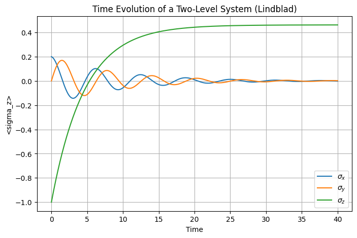

2.1. Quantum master equation (Lindblad equation)#
2.1.1. Derivation of quantum master equation - a summary#
Here a very brief summary of the derivation steps is provided so that we know what approximations are used. Read a textbook listed in the previous page for the full derivation. Consider a system S surrounded by a thermal reservoir R. We assume that the reservoir is an ideal heat bath which remains in thermal equilibrium all time. which is a key assumption to derive quantum master equation. The total system S+R is completely isolated and thus its time evolution is unitary. The Hamiltonian of the total system can be divided to three parts:
where \(H_\text{S}\), \(H_\text{R}\) and \(V_\text{SR}\) are the Hamiltonian for the system S, the reservoir R, and the interaction between S and R. \(I_\text{S}\) and \(I_\text{R}\) are identity operators in each Hilbert space.
The state of the total system is described by the density operator \(\rho_\text{SR}\) and its time evolution is determined by the Liouville-von Neumann equation
To solve this equation, two approximations are introduced.
The interaction between S and R is weak enough to use the Born approximation (1st order perturbation). Only \(V_\text{SR}\) and (V_text{SR})^2$ are taken into account and all higher order terms are neglected.
The reservoir is always in the thermal state \(\rho_\text{R} = \text{tr}_\text{S} \left( \rho_\text{SR} \right)= \frac{1}{Z_\text{R}} e^{-\beta H_\text{R}}\) where \(\text{tr}_\text{S}\) is a partial trace over the system Hilbert space. \(\beta\) and \(Z_\text{R}=\text{tr}_\text{R} e^{-\beta H_\text{R}}\) are usual inverse temperature and the partition function.
When the reservoir is disturbed, it instantaneously relaxes to the original equilibrium state. Hence, the state of reservoir remains in \(\rho_\text{R}\) all time. This implies that the reservoir has no memory of past events. This assumption is called the Markovian approximation.
The coupling Hamiltonian is separable. Mathematically, \(V_\text{SR} = \sum_{i} A_i \otimes B_i\). Further we assume that \(\langle B_i \rangle = \text{tr} \left( B_{i} \rho_\text{R} \right) = 0\).
We introduce jump operators, each of which represents either excitation or deexcitation process.
\[ A_{i} (\omega) = \sum_{k,k'} \delta(E_{k} - E_{k'} - \omega) |k\rangle \langle k | A_{i} |k' \rangle \langle k'| \]\(A_{i}(\omega)\) and \(A_{i}^{\dagger}(\omega)\) behave like annihilation and creation operators for \(i\)-th mode. From the completeness relation \(\sum_{\omega} A_{i}(\omega) = \sum_{\omega} A_{i}^{\dagger}(\omega) = A_i\).
All the effects of the reservoir are taken into account through the temporal correlation of the reservoir operators.
\[ C_{ij}(\tau) = \text{tr}_\text{R} \left(B_j(\tau) B_i(0) \rho_\text{R}\right), \quad \tau>0. \]Based on the Born-Markovian approximation, the state of the system can be approximated as \(\rho_\text{SR} (t) \approx \rho_\text{S} (t) \otimes \rho_\text{R}\) where \(\rho_\text{S} = \text{tr}_\text{R} \rho_\text{SR}\).
At last we have a standard form (Lindblad form) of quantum master equation.
where the \(\mathcal{D}\) is known as dissipator defined by
where the dissipation rate is the Fourier transform of the correlation function:
In Equation {eq}`eq:qme_general}, the unitary part include is a Lamb shift \(H_\text{LS}\) defined by
In most applications, the Lam-Shift is small. Hence, we shall omit it throughout this note.
The quantum master equation (2.1) works well only when the Born-Markovian approximation is valid. In many applications in quantum optics, the approximation holds reasonably well.
2.1.2. A simple example - optical master equation for a two-level atom#
Consider a system with two energy levels, a ground state \(| g\rangle\) of energy \(E_{g}\) and an excited state \(|e\rangle\) of energy \(E_{e}\). I shall call such a system a two-level atom in this note. However, it can be a molecule, a quantum dot or some other systems in which only two energy levels are dominantly involved in the processes we are interested in and contribution from other levels is assumed to be negligibly small.
Lowering and raising operators are defined with \(\ket{g}\) and \(\ket{e}\) as basis respectively by
The standard Pauli operators are expressed in the same basis as
The Hamiltonian of the atom is given by
where \(\hbar\omega_{0} = E_{e} - E_{g}\) is the excitation energy.
Since there is only one \(\omega\), and two transitions, we have two modes,
for absorption and
for emission.
The dissipation rates are
where the rate of spontaneous emission is defined by
and the Planck distribution by
The jump operators are \(A_{a} = \sigma_{-}\) for absorption and \(A_{e} = \sigma_{+}\) which are obvious from the definition of \(\sigma_{\pm}\).
The quantum master equation
which is simply an ordinary differential equation of \(2\times2\) matrix. This is simple enough to solve analytically.
2.1.3. Bloch equations#
There are many ways to solve Eq. (2.3). There is a special method that works only for the two-dimensional Hilbert space. Recalling that the identity matrix \(I\) and the Pauli matrices \(\sigma_{i}\) form a basis set. Expanding the density operator in the basis set,
where \(\vec{v}(t) = (v_{1}(t),v_{2}(t),v_{3}(t))\) is the expansion coefficients which uniquely determine the density operator. Since the density operator is self-adjoint, \(\vec{v}\) is real. In fact, it is easy to show that \(\vec{v} = \langle \vec{\sigma}\rangle = \text{tr}\left[\vec{\sigma}\rho(t)\right]\). Multiply \(\vec{\sigma}\) to Eq. (2.3) and taking trace, we obtain the equation of motion (known as the Bloch equation):
where \(\gamma = \gamma_0 (2N+1)\).
By letting the left hand side 0, we can immediately find the steady state.
The probability to find the atom in the excited state is given by
which is just the thermal equilibrium state. If the system is initially in the ground state, it is easy to find the solution to the Bloch equation and the system relaxation to the thermal state as
which indicates \(\gamma\) is the relaxation rate.
A nice things about the Bloch equation is that you can visualize the solution on the Bloch sphere. We will see it in the numerical example.
2.1.4. Solving a master equation numerically using QuTiP#
We solve the master equation
import matplotlib.pyplot as plt
import numpy as np
from qutip import *
# Parameters
omega0 = 1.0 # excitation energy
gamma0 = 0.1 # spontaneous emission rate
temperature = 1.0 # tempeature of photon gas
N = 1/(np.exp(omega0/temperature)-1) # Planck distribution
gamma1 = gamma0 * N # coefficient to absorption
gamma2 = gamma0 * (N+1) # coefficient to emission
# Hamiltonian for a two-level system (in the rotating frame)
H = 0.5 * omega0 * sigmaz()
# Jump operators
c_ops = [np.sqrt(gamma1) * sigmam(),np.sqrt(gamma2) * sigmap()]
# Initial state: start in the ground state |g>
rho = Qobj(np.array([[0, 0.1], [0.1, 1]]))
# simulation time
times = np.linspace(0, 40, 400)
# observables to compute
observables = [sigmax(),sigmay(),sigmaz()]
# solve the Lindblad Equation
result = mesolve(H, rho, times, c_ops, observables)
# probability to find the atom in the excited state
# p = (1+result.expect[2])/2
# 4. Plotting the Time Evolution
plt.figure(figsize=(8, 5))
plt.plot(times,result.expect[0], label=r"$\sigma_x$")
plt.plot(times,result.expect[1], label=r"$\sigma_y$")
plt.plot(times,result.expect[2], label=r"$\sigma_z$")
plt.title("Time Evolution of a Two-Level System (Lindblad)")
plt.xlabel("Time")
plt.ylabel("<sigma_z>")
plt.legend(loc=4)
plt.grid(True)
plt.show()
/home/kawai/anaconda3/envs/book/lib/python3.13/site-packages/qutip/solver/solver_base.py:598: FutureWarning: e_ops will be keyword only from qutip 5.3 for all solver
warnings.warn(
